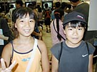
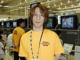
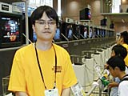

| ●現代大戦略 Ultimate War メディアファクトリー |
| 大人気のシミュレーションゲーム『大戦略』シリーズがロクヨンに！ ポリゴンで動くリアルな戦車、緻密なマップはファンの心をグッとつかみそう。もちろん初めての人も楽しめるゲームです。小学４年生の山田晃平くんも「おもしろかった！」と大満足。前作ファンだという夏井京一さんも「映像がリアルでいいですね。気長にやれそうなゲームなので注目してます」との感想。10分のプレー時間の中で、みなさん、ものすごい勢いで戦略を立てていました。続きは製品版でぜひどうそ！ |
|
|
| ●Dance Dance Revolution ディズニーダンシングミュージアム コナミ |

右：原りえちゃん
左：安藤だいすけくん |
ミッキーマウスをはじめとするディズニーのキャラクターが『ダンスダンスレボリューション』の世界に登場。ゲームの楽しさはもちろん、美しいディズニーのキャラクターがリズムに乗って踊るさまがとってもキュートです。会場では２人一組で、兄弟やお友達とプレーしている人が多かったですね。ほかのリズムゲームは挫折したという人も「これなら簡単。家族でプレーできそう」とうれしそうでした。ゲームの読みこみ時間が短いのも好評だったよう。また、いとこでプレーしていた原りえちゃん、安藤だいすけくんは「まだ遊びたい」と、すぐに行列に並び直していましたよ。 |
|
| ●ロックマンＤＡＳＨ〜鋼の冒険心〜 カプコン |
| カプコンのキャラクター、ロックマンが新しい冒険を繰り広げるアクションゲーム。ロクヨンでは初めて登場するロックマンが、大いなる遺産を求め、広大なフィールドを縦横無尽に駆け回ります。会場ではダンション部分のデモがプレーできましたが、３Ｄ画像のクリアさと、サクサク動く操作性が光ります。カプコンの寺西勉さんは「お客さんのウケがいいのでうれしいですね」と満足げ。オールドロックマンファンも、小さな子どもたちも一緒になってエンジョイしていました。 |

寺西勉さん |
|
| ●ＷＷＦレッスルマニア2000 アスミック・エース エンタテインメント |

佐藤至信さん |
全米で人気沸騰中のＷＷＦのレスラーが登場。個性豊かなキャラクターがリングせましと暴れまわります。場外や反則もできたり、かなり自由なプレーが楽しめそう。４人までの対戦プレーができるので、ボタンを連打して大興奮している男の子たちのグループもいました。アスミック・エース エンタテインメントの佐藤至信さんは「アメリカのプロレスなのでなじみのない人も多いと思っていたのですが、みなさんとても楽しんでくれています。終わってもすぐに列に並び直すかたも多いですね」とニコニコ。ＷＷＦのファンもふくめてかなり幅広い層にウケていたようです。 |
|